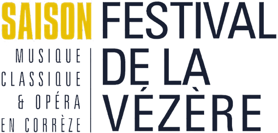
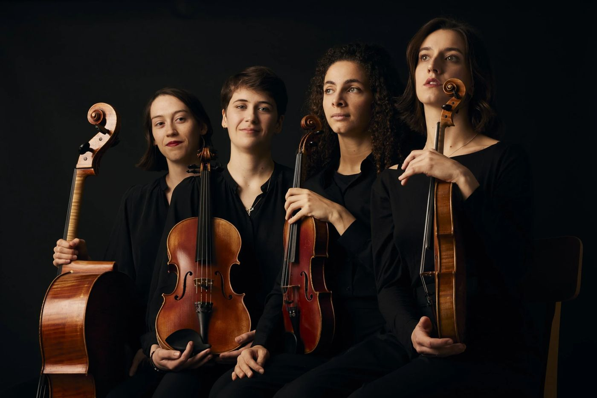

En avant-première, le Festival vous offre
Pour le concert du Quatuor Magenta, Da Capo vous raconte les œuvres avant, pendant et après le concert, sur votre téléphone. Rien à installer, c’est offert avec votre billet.
Ce que vous allez vivre
À partir du 4 janvier, vous recevez votre guide par email. Pour chaque œuvre, une histoire à écouter en quelques minutes et des textes à lire à votre rythme : qui était le compositeur au moment d’écrire, ce qu’il faut guetter dans la musique. Vous arrivez à Uzerche en sachant ce que vous allez entendre.
Par exemple, cette histoire, à écouter tout de suite :
La reine Victoria chante une mélodie de Mendelssohn, sans savoir qu’elle se trompe de Mendelssohn.
Raconté par Thibault d’Hauthuille
Un QR code vous attend à l’Auditorium. À l’ouverture des portes, votre téléphone affiche l’essentiel : l’ordre du programme, deux ou trois choses à écouter dans chaque œuvre, les noms des musiciennes. Un exemple : dans le finale de Haydn, comptez les fausses fins avant d’applaudir.
Quand le concert commence, l’écran vous invite à éteindre votre téléphone. La musique, elle, se vit sans écran.
Aperçu de l’écran en salle
Un dernier email : une photo de la soirée à partager, quelques lignes pour prolonger l’écoute, et la parole est à vous. Du frère ou de la sœur, qui avait raison ? Vos mots sont lus par le Festival.
Aperçu de l’écran du lendemain
Simple comme un lien
Vous avez déjà votre billet ? Le lien vous parviendra aussi le 4 janvier.

Ida Derbesse violon
Elena Watson-Perry violon
Claire Pass-Lanneau alto
Fiona Robson violoncelle
Un quatuor à cordes français porté par l’énergie, l’élégance et une curiosité sans frontières.
Auditorium Sophie-Dessus, 14 allée de la Papeterie, Uzerche · Durée 1h15 · À une demi-heure de Brive par l’A20, parking au pied de l’auditorium · Réservations : 05 55 73 00 44
Réserver ma placeLaissez votre adresse : le Festival de la Vézère vous écrira le 4 janvier, avec une deuxième histoire à écouter et le lien de réservation.